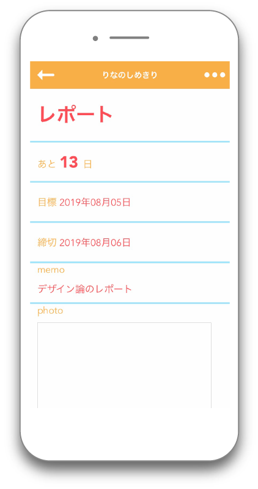
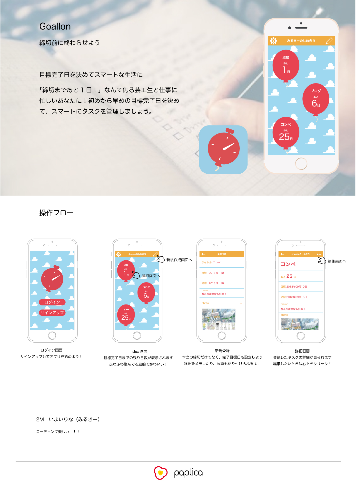

Works
早食いを防止するお箸
Chobit!



健康に気をつけたいのについつい早食いしてしまう人をターゲットに、箸に装着するだけで１口の間隔を可視化できるハードウェアと連動アプリを制作しました。１口の間隔が短いと赤のマーク、適切だと青のマークが表示され、早食いのタイミングを知ることができます。
大学の実習でIoTをテーマにグループワークで制作しました。
授業内で、１口の間隔を測るハードウェアと測定した値を可視化するための連動アプリをプロトタイプとして制作しました。ハードウェアのプロトタイプはobnizと3Dプリンタを使用しました。私はアプリのデザイン・コーディングを担当しました。

早食いしやすいのが食べ始めか終わりかがパッと見ただけでわかりやすいように、色が端から順番に塗られていくデザインにしました。また、前回の反省を忘れずに生かすために一言アドバイスを表示するようにしました。今回のプロトタイプではアプリからプロダクトの起動を行いましたが、より簡単に使用できるようにプロダクト側から起動ができるようにするなど、どうしたら面倒に思わずに使い続けてもらえるかを考える必要があると思いました。